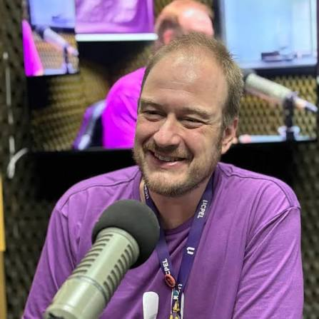
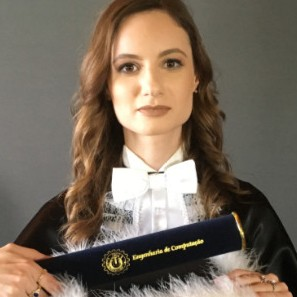
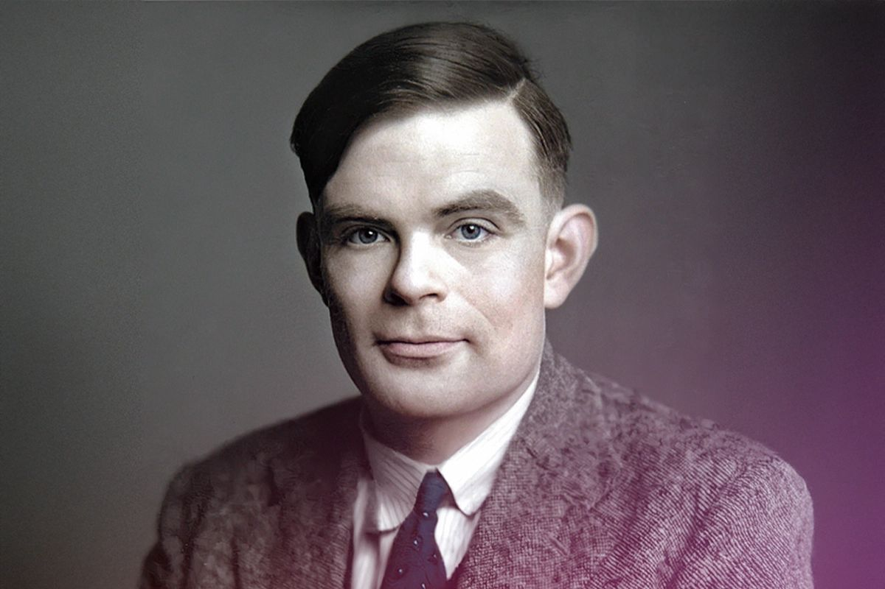
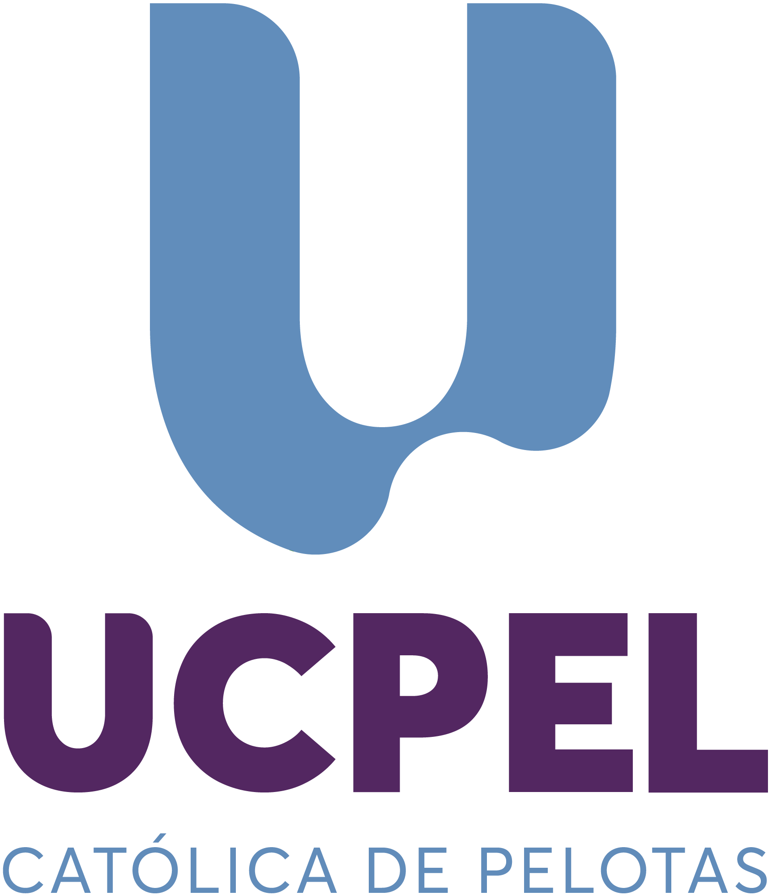
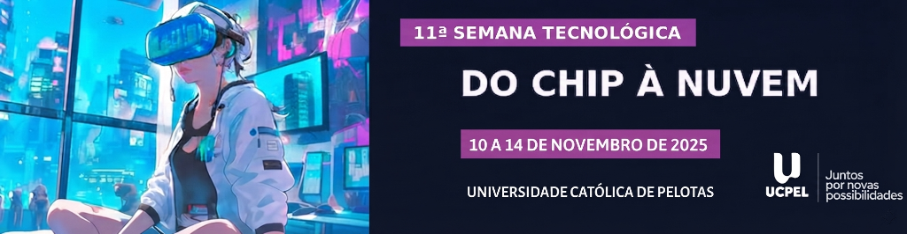
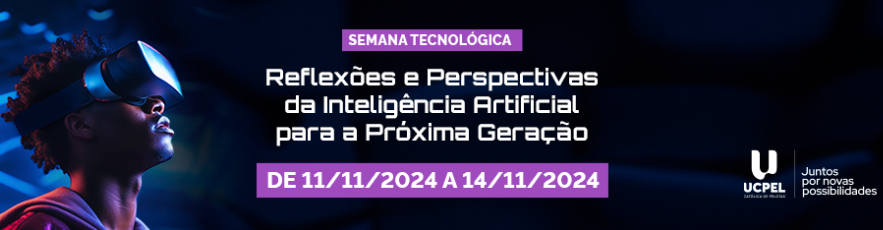
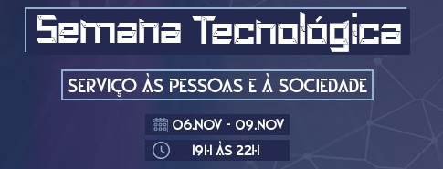

12ª Semana
Tecnológica
UCPel
Além do código: criatividade, conhecimento e inovação para transformar o futuro.
Sobre o Evento
Um dos maiores encontros de tecnologia e inovação acadêmica do sul do estado do Rio Grande do Sul.
A 12ª Semana Tecnológica da UCPel reúne estudantes, pesquisadores, docentes e profissionais líderes de tecnologia em quatro dias de intensa imersão prática e teórica.
O evento abordará as tendências mais disruptivas do mercado, como Inteligência Artificial Generativa, Engenharia de Nuvem, Cibersegurança, Arquitetura de Software e Desenvolvimento de Produtos Digitais, promovendo a conexão direta entre a universidade e as principais empresas do polo tecnológico.
Todos os participantes inscritos que atingirem a frequência mínima receberão certificado oficial com 40 horas complementares emitido pela Pró-Reitoria Acadêmica da UCPel.
Programação
Grade de atividades completa dos três dias do evento.
Dia 1
Dia 2
Dia 3
Palestrantes
Especialistas de referência acadêmica na área de tecnologia confirmados.



Organização
Instituições e equipe responsável pela coordenação da 12ª Semana Tecnológica.

Edições Anteriores
Conheça as edições anteriores da Semana Tecnológica e acompanhe a evolução do evento.



Contato
Canais de comunicação com a organização da 12ª Semana Tecnológica UCPel.